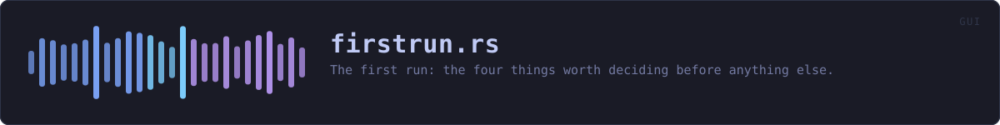

crates/veilvoice-gui/src/firstrun.rs
veilvoice-gui · 863 lines · read the source here · or on GitHub
The first run: the four things worth deciding before anything else.
What this replaced
Two checkboxes about animation. Everything that actually matters -- the app lock, the passphrase recordings are encrypted with, whether the window locks itself -- was left to be discovered on a tab most people never opened.
That is a defensible choice for a preference and a bad one for a protection. A default nobody is shown is not a question, it is an answer, and for a privacy tool the answer it was quietly giving was "none of it".
What it asks, and what it will not do
Four cards, each skippable, each stating what it buys before asking for anything:
- Appearance. The two animation choices, kept from the old panel.
- The app lock. A passphrase for the window, and -- since 0.1.18 -- the key that names and encrypts VeilVoice's own files. The card says both, and says the sentence that has to be said out loud: forget it and those files are gone.
- The recording passphrase. What veiled recordings are encrypted with. Separate from the app lock by default, with the option to use one passphrase for both and a plain statement of what that trades.
- Locking itself. On at half an hour, with the delay and the off switch right there.
Nothing here is a gate. Every card has a way past it, and skipping all four leaves VeilVoice exactly as it was before this module existed. A setup flow that will not let somebody reach the program is a setup flow they resent; this one is a set of offers made at the moment they make sense.
The walkthrough in crate::tour runs after it, and carries the rest of the setup: encryption at rest, whether this copy is installed, and what each tab is for. It does not offer the app lock again, because this did, thirty seconds earlier, on a card of its own.
In plain words
The first time you open VeilVoice it offers you a password for the app, a password for your recordings, and a timer that locks the window when you walk away. You can skip any of them and set them later.
WHAT THIS FILE CONTAINS
863 lines defining 14 functions (1 public), 4 types and 1 constant. Everything below is read out of the source, so it cannot disagree with the code.
The types it owns.
enum Stepline 51 · Which card is showing.struct FirstRunline 108 · What the setup is holding while it runs.enum Outcomeline 130 · What the panel wants the application to do after drawing.struct Readingline 589 · What the last card of the tour reads from this computer.
What happens when it runs. These are the ways in: public, and nothing else in this file calls them, so they are what an outside caller reaches first.
FirstRun::panelline 144 · Draw the current card.
reachesapp_lock,appearance,autolock,machine,recording,should_skip,buttons,card,field,still_reading
WHAT CALLS WHAT
The functions this file defines, and the calls between them. An edge means the callee's name appears, called, inside the caller's body. This is a syntactic reading, not a type-resolved one.
The same graph as Mermaid source
%%{init: {"theme":"base","themeVariables":{"background":"#1a1b26","primaryColor":"#1f2335","primaryTextColor":"#c0caf5","primaryBorderColor":"#7aa2f7","secondaryColor":"#16161e","tertiaryColor":"#16161e","lineColor":"#737aa2","textColor":"#c0caf5","mainBkg":"#1f2335","nodeBorder":"#7aa2f7","clusterBkg":"#16161e","clusterBorder":"#2f3549","fontFamily":"ui-monospace, SFMono-Regular, Consolas, monospace","fontSize":"14px"}}}%%
flowchart TD
n_next["Step::next<br/>line 75"]
n_position["Step::position<br/>line 86"]
n_panel(["FirstRun::panel<br/>line 144"])
n_should_skip["FirstRun::should_skip<br/>line 207"]
n_appearance["FirstRun::appearance<br/>line 216"]
n_app_lock["FirstRun::app_lock<br/>line 233"]
n_recording["FirstRun::recording<br/>line 305"]
n_machine["FirstRun::machine<br/>line 401"]
n_autolock["FirstRun::autolock<br/>line 539"]
n_card["card<br/>line 563"]
n_read_machine["read_machine<br/>line 607"]
n_still_reading["still_reading<br/>line 627"]
n_field["field<br/>line 638"]
n_buttons["buttons<br/>line 650"]
n_app_lock --> n_buttons
n_app_lock --> n_card
n_app_lock --> n_field
n_appearance --> n_buttons
n_appearance --> n_card
n_autolock --> n_buttons
n_autolock --> n_card
n_machine --> n_buttons
n_machine --> n_card
n_machine --> n_still_reading
n_panel --> n_app_lock
n_panel --> n_appearance
n_panel --> n_autolock
n_panel --> n_machine
n_panel --> n_recording
n_panel --> n_should_skip
n_recording --> n_buttons
n_recording --> n_card
n_recording --> n_field
click n_next href "https://github.com/tilas01/veilvoice/blob/main/crates/veilvoice-gui/src/firstrun.rs#L75" "open the source"
click n_position href "https://github.com/tilas01/veilvoice/blob/main/crates/veilvoice-gui/src/firstrun.rs#L86" "open the source"
click n_panel href "https://github.com/tilas01/veilvoice/blob/main/crates/veilvoice-gui/src/firstrun.rs#L144" "open the source"
click n_should_skip href "https://github.com/tilas01/veilvoice/blob/main/crates/veilvoice-gui/src/firstrun.rs#L207" "open the source"
click n_appearance href "https://github.com/tilas01/veilvoice/blob/main/crates/veilvoice-gui/src/firstrun.rs#L216" "open the source"
click n_app_lock href "https://github.com/tilas01/veilvoice/blob/main/crates/veilvoice-gui/src/firstrun.rs#L233" "open the source"
click n_recording href "https://github.com/tilas01/veilvoice/blob/main/crates/veilvoice-gui/src/firstrun.rs#L305" "open the source"
click n_machine href "https://github.com/tilas01/veilvoice/blob/main/crates/veilvoice-gui/src/firstrun.rs#L401" "open the source"
click n_autolock href "https://github.com/tilas01/veilvoice/blob/main/crates/veilvoice-gui/src/firstrun.rs#L539" "open the source"
click n_card href "https://github.com/tilas01/veilvoice/blob/main/crates/veilvoice-gui/src/firstrun.rs#L563" "open the source"
click n_read_machine href "https://github.com/tilas01/veilvoice/blob/main/crates/veilvoice-gui/src/firstrun.rs#L607" "open the source"
click n_still_reading href "https://github.com/tilas01/veilvoice/blob/main/crates/veilvoice-gui/src/firstrun.rs#L627" "open the source"
click n_field href "https://github.com/tilas01/veilvoice/blob/main/crates/veilvoice-gui/src/firstrun.rs#L638" "open the source"
click n_buttons href "https://github.com/tilas01/veilvoice/blob/main/crates/veilvoice-gui/src/firstrun.rs#L650" "open the source"
classDef entry fill:#1f2335,stroke:#7aa2f7,color:#c0caf5
class n_panel entry
classDef helper fill:#1f2335,stroke:#bb9af7,color:#c0caf5
class n_next,n_position,n_should_skip,n_appearance,n_app_lock,n_recording,n_machine,n_autolock,n_card,n_read_machine,n_still_reading,n_field,n_buttons helperThis site loads no third-party script, so it cannot run Mermaid; the diagram above is the same nodes and edges drawn by the generator instead. GitHub renders the source below directly.
ITEMS
| Item | Line | Documentation |
|---|---|---|
Step pub enum | 51 | Which card is showing. |
Step::next fn | 75 | The step after this one, or None at the end of the tour. |
Step::position fn | 86 | One-based position, for "step 2 of 4". |
Step::COUNT const | 103 | How many cards the tour has. |
FirstRun pub struct | 108 | What the setup is holding while it runs. |
Outcome pub enum | 130 | What the panel wants the application to do after drawing. |
FirstRun::panel pub fn | 144 | Draw the current card. |
FirstRun::should_skip fn | 207 | Whether a card has nothing left to ask. |
FirstRun::appearance fn | 216 | The appearance step: pick a palette and see it applied immediately. |
FirstRun::app_lock fn | 233 | The app-lock step: set a passphrase for VeilVoice itself, or decline it. |
FirstRun::recording fn | 305 | The recording step: the at-rest passphrase, and what it is separate from. |
FirstRun::machine fn | 401 | The machine card: what this computer says, read once rather than per frame. |
FirstRun::autolock fn | 539 | The auto-lock step: how long idle before the window locks itself. |
card fn | 563 | A bordered card, so each step reads as one thing rather than a page of text. |
Reading struct | 589 | What the last card of the tour reads from this computer. |
read_machine fn | 607 | Ask this computer everything the last card shows, on a worker thread. |
still_reading fn | 627 | The line a card shows where an answer will go, while it is being got. |
field fn | 638 | A password field with its label, laid out like the rest of the application. |
buttons fn | 650 | The row that moves on. |